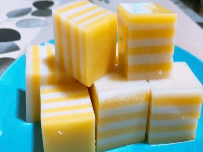

|  |
Food's name: Corn jelly▸ Ingredients:
▸ Time to prepare: 30 minutes ▸ Approx quantity: servings for 2 people |
▸ Detailed recipe:
- Bring to a simmer and take back the jelly, sugar, and 200ml filtered water.
- Peel, remove the beard, wash with water, separate seeds.
- Put the seeds in a blender with 180ml of water.
- Filter through the render the just mill.
- Bring water to a boil over medium heat, use your hands to bring it to a boil, then add 2 minutes to compare and repeat, let cool.
- Bring to a boil, especially milk and coconut milk.
- Mix 3 tablespoons of jelly with 4 tablespoons of bone broth quickly.
- Pour in the music, wait 2 minutes for the jelly to solidify.
- Next, mix 3 tablespoons of jelly with 4 tablespoons of coconut milk quickly.
- Pour over the jelly, wait 2 minutes for the jelly to solidify.
- Repeat these steps to alternate layers of jelly and coconut jelly until you run out of ingredients.
- Set the jelly in the refrigerator for 2 hours to enjoy.
▸ Calories and related information: